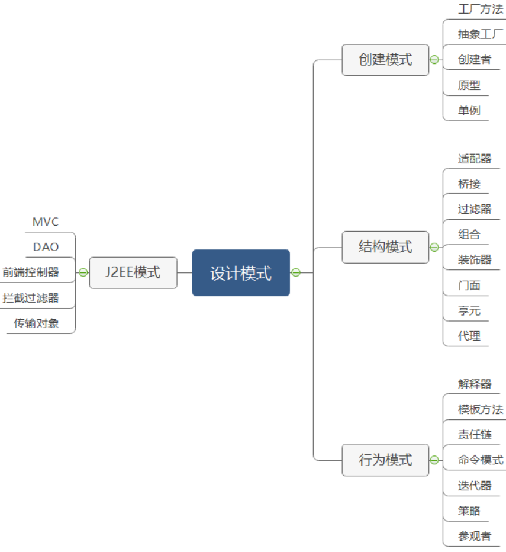

设计模式简介
设计模式（Design pattern）代表了最佳的实践，通常被有经验的面向对象的软件开发人员所采用。设计模式是软件开发人员在软件开发过程中面临的一般问题的解决方案。这些解决方案是众多软件开发人员经过相当长的一段时间的试验和错误总结出来的。
3大类型23种

创建型模式（Creational Patterns）
这些设计模式提供了一种在创建对象的同时隐藏创建逻辑的方式，而不是使用 new 运算符直接实例化对象。这使得程序在判断针对某个给定实例需要创建哪些对象时更加灵活。5种：
工厂模式（Factory Pattern）
抽象工厂模式（Abstract Factory Pattern）
单例模式（Singleton Pattern）
建造者模式（Builder Pattern）
原型模式（Prototype Pattern）
结构型模式（Structural Patterns）
这些设计模式关注类和对象的组合。继承的概念被用来组合接口和定义组合对象获得新功能的方式。8种：
适配器模式（Adapter Pattern）
桥接模式（Bridge Pattern）
过滤器模式（Filter、Criteria Pattern）
组合模式（Composite Pattern）
装饰器模式（Decorator Pattern）
外观模式（Facade Pattern）
享元模式（Flyweight Pattern）
代理模式（Proxy Pattern）
行为型模式（Behavioral Patterns）
这些设计模式特别关注对象之间的通信。12种：
责任链模式（Chain of Responsibility Pattern）
命令模式（Command Pattern）
解释器模式（Interpreter Pattern）
迭代器模式（Iterator Pattern）
中介者模式（Mediator Pattern）
备忘录模式（Memento Pattern）
观察者模式（Observer Pattern）
状态模式（State Pattern）
空对象模式（Null Object Pattern）
策略模式（Strategy Pattern）
模板模式（Template Pattern）
访问者模式（Visitor Pattern）
J2EE 设计模式
这些设计模式特别关注表示层。这些模式是由 Sun Java Center 鉴定的。8种：
MVC 模式（MVC Pattern）
业务代表模式（Business Delegate Pattern）
组合实体模式（Composite Entity Pattern）
数据访问对象模式（Data Access Object Pattern）
前端控制器模式（Front Controller Pattern）
拦截过滤器模式（Intercepting Filter Pattern）
服务定位器模式（Service Locator Pattern）
传输对象模式（Transfer Object Pattern）
设计模式之间的关系

设计模式的原则
单一职责原则（Single Responsibility Principle）
类的职责要单一，不能将太多的职责放在一个类中。
开闭原则（Open Close Principle）
对扩展开放，对修改关闭。在程序需要进行拓展的时候，不能去修改原有的代码，实现一个热插拔的效
果。简言之，是为了使程序的扩展性好，易于维护和升级。想要达到这样的效果，我们需要使用接口和
抽象类，后面的具体设计中我们会提到这点。
里氏代换原则（Liskov Substitution Principle）
里氏代换原则是面向对象设计的基本原则之一。 里氏代换原则中说，任何基类可以出现的地方，子类一
定可以出现。LSP 是继承复用的基石，只有当派生类可以替换掉基类，且软件单位的功能不受到影响
时，基类才能真正被复用，而派生类也能够在基类的基础上增加新的行为。里氏代换原则是对开闭原则
的补充。实现开闭原则的关键步骤就是抽象化，而基类与子类的继承关系就是抽象化的具体实现，所以
里氏代换原则是对实现抽象化的具体步骤的规范。
依赖倒转原则（Dependence Inversion Principle）
这个原则是开闭原则的基础，具体内容：针对接口编程，依赖于抽象而不依赖于具体。
接口隔离原则（Interface Segregation Principle）
使用多个隔离的接口，比使用单个接口要好。它还有另外一个意思是：降低类之间的耦合度。由此可
见，其实设计模式就是从大型软件架构出发、便于升级和维护的软件设计思想，它强调降低依赖，降低
耦合。
迪米特法则（Demeter Principle）
又称知识最少原则
一个实体应当尽量少地与其他实体之间发生相互作用，使得系统功能模块相对独立。
合成复用原则（Composite Reuse Principle）
尽量使用合成 or 聚合的方式，而不是使用继承 。